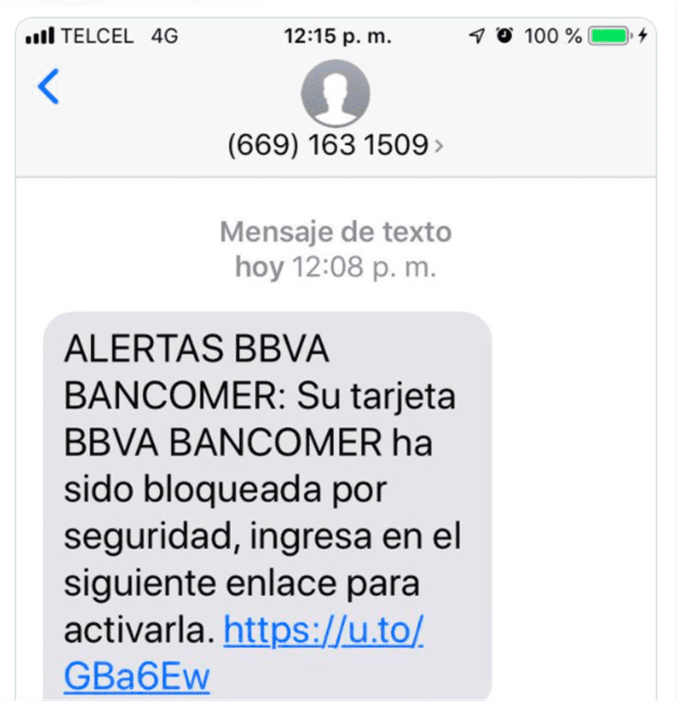

¿Qué es la ciberseguridad?
La ciberseguridad es la práctica de defender las computadoras, los servidores, los dispositivos móviles, los sistemas electrónicos, las redes y los datos de ataques maliciosos.
Protege tus dispositivos y datos de las amenazas digitales
La ciberseguridad es la práctica de defender las computadoras, los servidores, los dispositivos móviles, los sistemas electrónicos, las redes y los datos de ataques maliciosos.
Evita que tus datos sean robados o comprometidos por atacantes.
Protege tu red contra accesos no autorizados y ataques externos.
Garantiza que tus datos almacenados en la nube estén seguros.

Es un ataque en el que los ciberdelincuentes engañan a las personas para que revelen información confidencial, como contraseñas, datos bancarios o números de tarjetas de crédito, haciéndose pasar por una entidad confiable (por ejemplo, bancos, empresas o instituciones gubernamentales).
Es un tipo de malware que bloquea el acceso a los archivos o sistemas de una víctima mediante cifrado y exige un rescate (ransom) a cambio de restaurar el acceso.
Es un software malicioso diseñado para infiltrarse, dañar o interrumpir sistemas informáticos sin el consentimiento del usuario.
Un ataque que sobrecarga un servidor, red o sistema con una gran cantidad de tráfico, haciéndolo inaccesible para los usuarios legítimos.
Una contraseña segura dificulta el acceso no autorizado a tus cuentas en caso de que alguien intente adivinarlas o usar herramientas automatizadas.
@, #, $, %, etc.).
La autenticación en dos pasos agrega una capa adicional de seguridad, incluso si tu contraseña se ve comprometida.
El phishing es una de las formas más comunes de ataques cibernéticos, y reconocer señales sospechosas ayuda a evitar ser víctima.
Ejemplo de mensaje malicioso:
En 2017, WannaCry infectó sistemas en más de 150 países, cifrando datos y exigiendo rescates para liberarlos. Este ataque afectó a hospitales, empresas y usuarios individuales, demostrando la importancia de mantener sistemas y software actualizados.
Un simple clic en un enlace malicioso enviado por correo electrónico permitió a los atacantes comprometer las credenciales de una empresa, lo que resultó en pérdidas millonarias y exposición de información confidencial.
Ofrece protección en tiempo real contra virus, spyware y malware.
Un antivirus gratuito que protege contra virus y ransomware, con herramientas de escaneo rápido.
Almacena contraseñas encriptadas y sincroniza datos entre dispositivos.
Un gestor de contraseñas de código abierto que ofrece almacenamiento seguro de credenciales.
Un bloqueador de contenido eficiente que protege contra anuncios y rastreadores.
Extensión que bloquea automáticamente los rastreadores que intentan recopilar información sobre ti.
VPN segura y confiable con una política de no registros (no-logs).
Ofrece 10 GB mensuales gratuitos para navegación segura y desbloqueo de contenido.
Para obtener más información sobre ciberseguridad, puedes consultar el siguiente articulo: